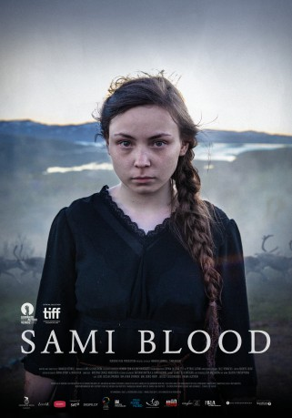

#10101 Das Mädchen aus dem Norden
Alternativ: Sami Blood - Sameblod
 
 IMDB-Wertung: 7.4 / 10
IMDB-Wertung: 7.4 / 10  Metascore: 79
Metascore: 79 
In 1930s Lapland, the 14-year-old indigenous Sámi girl, Elle Marja, leaves the wild ancestral grounds and the family's reindeer camp to attend a remote draconian boarding school along with her younger sister, Njenna. However--as the bright rural student pursues a denied education and an opportunity, desirous of integrating herself into the modern Swedish society--a painful visit by a team of anthropologists paired by a traumatic experience will be the harsh reminders of an ever-present brutal prejudice and a deep-seated racism. Uppsala promises a bright future in the bustling metropolis, but to pass as a regular Swedish teenager, Elle Marja will have to make a greater sacrifice than just changing her name. But, can an outcast sever ties and renounce his proud lineage so easily?
Jahr: 2016
Dauer: 107 Minuten
FSK:
Land: Norwegen Studio: TemperclayfilmTonspuren: DD5.1 - ,
Untertitel: Deutsch,
Auflösung: 720p (1280x536) Größe: 3031 MB
Genre: Drama
Regisseur: Amanda Kernell
Drehbuch: Amanda Kernell
Soundtrack: Kristian Eidnes Andersen
Darsteller:
- Julius Fleischanderl als Niklas
- Olle Sarri als Olle
- Hanna Alström als Lärarinnan
- Malin Crépin als Elise
- Hanna Asp als Ingrid
 Anders Berg als Emanuel - Vetenskapsman 1
Anders Berg als Emanuel - Vetenskapsman 1- Gabriel Holmberg als Olof
- Mimmi Kandler als Röstskådespelerska
- Marika Lindström als Bibliotikarie
- Lene Cecilia Sparrok als Elle Marja
- Mia Erika Sparrok als Njenna
- Maj-Doris Rimpi als Elle Marja / Christina
- Andreas Kundler als Gustav
- Ylva Gustafsson als Laevie
- Katarina Blind als Mamma Anna
- Emilia Bostedt als Elsa
- Beata Cavallin als Hedda
- Erika Cardenas Hedenberg als Karin
- Tom Kappfjell als Aajja
- Anna Sofie Bull Kuhmunen als Anna-Stina
- Elina Sandberg als
- Tove Skeidsvoll als Gymnastiklärarinnan
- Anne Biret Somby als Sanna
- Lillie Sparrok als Aahkka
- Hans-Ola Stenlund als Vetenskapsman 2
- Jonar Thomasson als Jon-Olov
- Piere Åhrén als Jåvva
Datei: X:\2016(G-M)\Mädchen aus dem Norden, Das (2016, FSK, 1280x536).mkv seit 03.12.2018
Festplatte: HD 2016(A-Z)
 Es gibt insgesamt 164 Filme in der Gruppe '2016(G-M)'
Es gibt insgesamt 164 Filme in der Gruppe '2016(G-M)'